Your gaming journal
Games worth coming back to.
Save games for later, rate the stories you finish, and keep memories of every session.
My collection
Library
Your stories
Player journal
Open a game and write about your first session.
In-game moments
Gallery
1–2 / 18
Drag the screenshots or use the arrows. Select an image to view it full size.

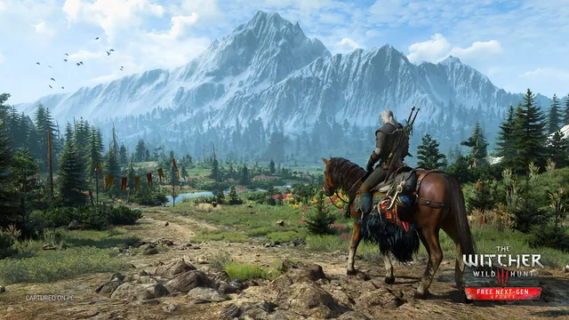
The Witcher 3: Wild Hunt The Witcher 3: Wild Hunt

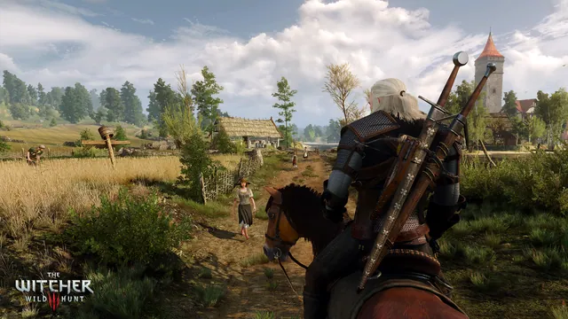
The Witcher 3: Wild Hunt
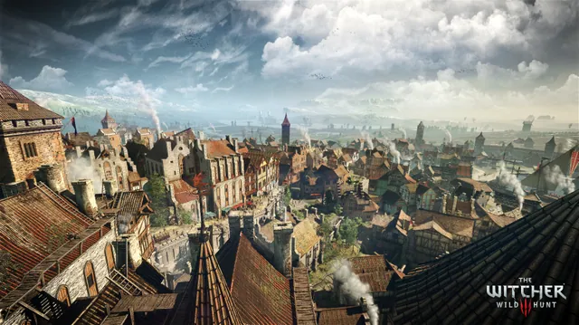
The Witcher 3: Wild Hunt
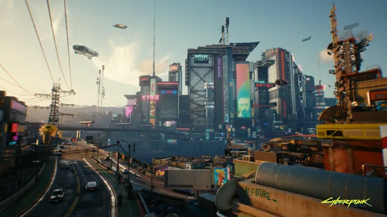
Cyberpunk 2077
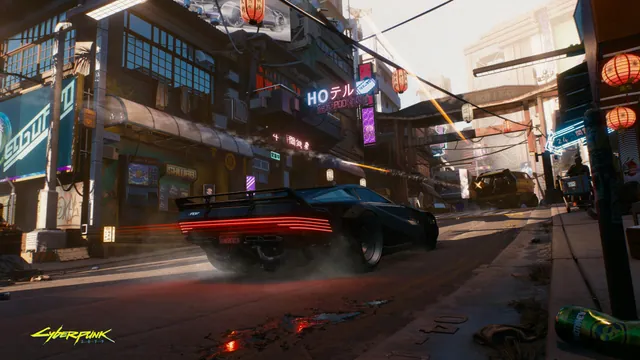
Cyberpunk 2077
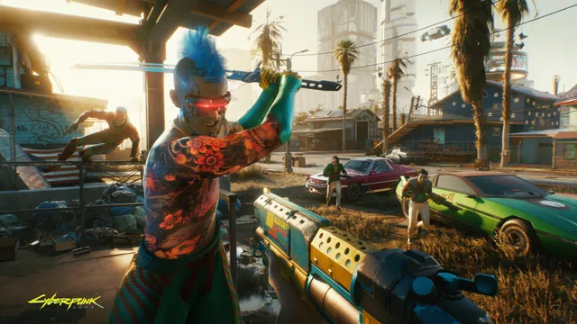
Cyberpunk 2077 Cyberpunk 2077 Dishonored


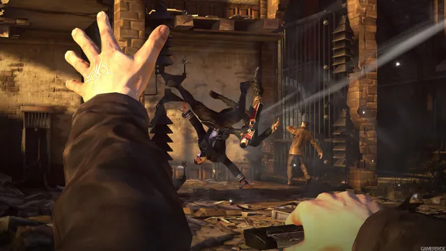
Dishonored Ghost of Tsushima

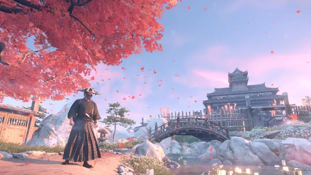
Ghost of Tsushima God of War Ragnarök

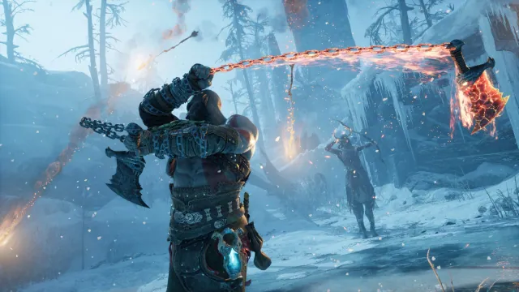
God of War Ragnarök
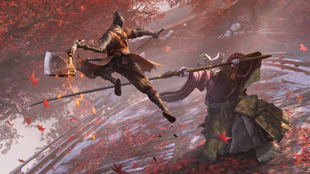
Sekiro: Shadows Die Twice
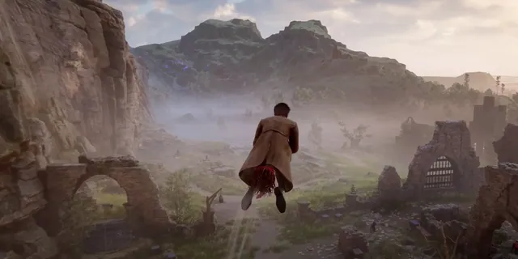
Hogwarts Legacy
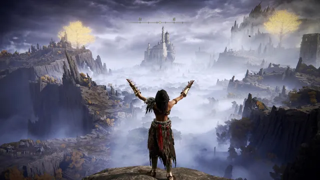
Elden Ring
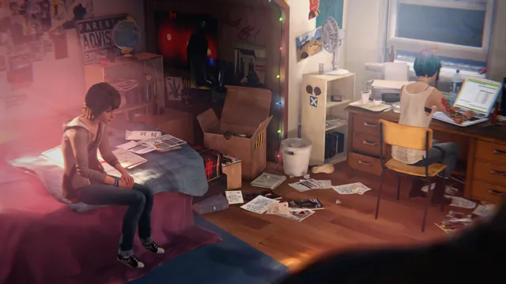
Life Is Strange